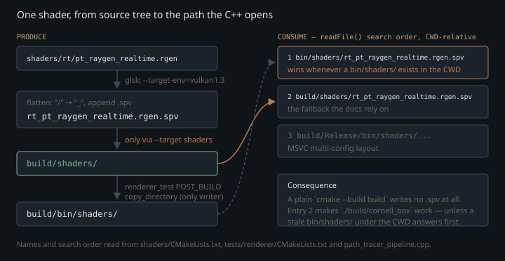

Monograph · Tree · ← Sitemap · Build system
systems
Build system
CMake options, targets, shaders target, examples.
Ten archives and one edge nobody declared
`ohao/CMakeLists.txt` is ten `add_subdirectory` lines and a comment; each leaf directory globs its own sources into a static library. The *declared* dependency graph is a clean DAG — `ohao_runtime` → `ohao_ecs` → `ohao_renderer` → `ohao_gpu_vulkan` → `ohao_scene` → `ohao_core`, with `ohao_api` sitting on `ohao_ecs` and `ohao_reflect` beneath both. The *reference* graph is not. `VulkanRenderer`, compiled into `ohao_gpu_vulkan`, owns a `std::unique_ptr<DeferredRenderer>` and calls through it every frame, while `DeferredRenderer` is compiled into `ohao_renderer`:
m_deferredRenderer->setRenderScene(m_renderScene.get());ohao/gpu/vulkan/render_dispatch.cpp:134That back edge is never told to CMake. A GNU static archive is scanned once, in the order it appears on the link line, and by the time `ld` reaches `libohao_gpu_vulkan.a` it has already discarded the `ohao_renderer` members it now needs. The examples and the standalone `renderer_test` therefore hand the linker the whole set as one re-scannable group instead of an ordered list:
-Wl,--start-group ohao_ecs ohao_renderer ohao_gpu_vulkan ohao_scene ohao_physics ohao_audio ohao_core -Wl,--end-groupexamples/CMakeLists.txt:18The MSVC branch of the same function lists the archives without a group and takes `/FORCE:MULTIPLE` where the GNU branch takes `--allow-multiple-definition`:
target_link_options(${name} PRIVATE /FORCE:MULTIPLE)examples/CMakeLists.txt:15The workaround is copied per call site rather than expressed once as a dependency, and the copies have drifted. `tests/shadow_system` (off by default) links `ohao_renderer` and `ohao_scene` in plain order with no group at all, and on the GNU branch `tests/engine`, `tests/physics` and `tests/force_generators` open a group they never close.
target_link_libraries(shadow_system_tests PRIVATEtests/shadow_system/CMakeLists.txt:14The second link flag is doing quieter damage. `STB_IMAGE_IMPLEMENTATION` is expanded with external linkage in the bindless texture uploader in `ohao_gpu_vulkan`, and again in `tests/runtime/runtime_tests.cpp`, so that test defines `stbi_load` and friends twice.
`stb_image_write` duplicates the same way and is the more immediate per-executable trigger: `ohao/runtime/image.cpp` expands it inside `ohao_runtime`, and so does every `examples/*.cpp` main and `tests/renderer/renderer_test.cpp`; where such an executable also links `ohao_runtime`, `stbi_write_png` is defined twice. Exactly one engine TU avoids the collision, and it does so by hand: the FBX loader prefixes `STB_IMAGE_STATIC`, which gives its copy internal linkage.
#define STB_IMAGE_STATICohao/scene/asset/model_fbx.cpp:10Both are papered over at link time rather than fixed at the source: `--start-group` re-scans until fixpoint instead of declaring the edge, and `-Wl,--allow-multiple-definition` silences the duplicate-symbol error instead of isolating stb into one TU. The first costs a few link passes. The second costs the diagnostic itself, for the whole executable — any genuine ODR collision introduced anywhere in the engine now links silently, resolving to whichever definition the linker saw first.
target_link_options(${name} PRIVATE -Wl,--allow-multiple-definition)examples/CMakeLists.txt:20The same trade appears in one more place. NRD's NRI backend carries its own build of the Vulkan Memory Allocator with the same global symbols, and under `/FORCE:MULTIPLE` whichever object the linker pulls first wins. `ohao_gpu_vulkan` marks `vmaCreateAllocator` as a required symbol on its *interface*, so every consumer pulls OHAO's object before NRI's regardless of library order:
target_link_options(ohao_gpu_vulkan INTERFACE /INCLUDE:vmaCreateAllocator)ohao/gpu/vulkan/CMakeLists.txt:39Optional SDKs, and the one that changes a class layout
Two heavy NVIDIA dependencies are `option()`-gated. NRD defaults ON; DLSS defaults to whether the NGX static library is present on disk. `tools/fetch_dlss.py` downloads the pinned SDK files (SHA-256 per file) into the git-ignored `external/DLSS/`; a clone that has not run it configures cleanly with the feature off.
set(OHAO_DLSS_DEFAULT ON)CMakeLists.txt:71Both use the same guard shape: the `.cpp` stays in the source glob unconditionally and its *body* is wrapped in an `#ifdef`, so an OFF build compiles an empty translation unit rather than dropping a file from the target.
target_compile_definitions(ohao_renderer PRIVATE OHAO_NRD_ENABLED)ohao/render/CMakeLists.txt:46That shape is safe for NRD, whose surface is functions. It is a trap for DLSS, because `OHAO_DLSS_ENABLED` also gates *members* of a class that both archives see:
std::unique_ptr<DlssRR> m_dlssRR;ohao/render/rt/path_tracer.hpp:246`sizeof(PathTracer)` depends on the macro. `ohao_gpu_vulkan` pulls `path_tracer.hpp` in transitively through `renderer.hpp`, and the definition above is `PRIVATE`, so it does not propagate across the target boundary. The macro is therefore defined a second time, by hand, on the other library:
if(OHAO_DLSS AND TARGET ngx_dlss)ohao/gpu/vulkan/CMakeLists.txt:30Deleting that three-line block in `ohao/gpu/vulkan/CMakeLists.txt` does not fail the build. It produces two archives that disagree about the layout of a class they both construct and destroy — the failure surfaces as heap corruption at runtime, in a DLSS build, far from the cause.
What is actually optional
It is tempting to read the option list as "the heavy dependencies are all switchable". The top-level file declares sixteen `option()`s, and fourteen of them are test suites, the scene benchmark and the Python bindings; the only dependency switches are `OHAO_NRD` and `OHAO_DLSS`. OpenImageDenoise is neither: it is looked up quietly, and its absence only turns the OIDN backend into a stub. `ohao_renderer` defines `OHAO_OIDN_ENABLED` only when the package was found, and the denoise entry point compiles to a warning and a `false` return otherwise:
find_package(OpenImageDenoise QUIET)ohao/render/CMakeLists.txt:4So a machine without OIDN configures and builds the whole renderer; it just cannot denoise with OIDN, and the default offline profile — which asks for it — gets an undenoised image. `glslc` is the opposite: `find_program` plus a fatal error, which means you cannot configure even a C++-only build without the Vulkan SDK's shader compiler on `PATH`:
message(FATAL_ERROR "glslc shader compiler not found!")shaders/CMakeLists.txt:5Since 2b step 6 the same holds for `slangc`, looked for in the Vulkan SDK before `PATH`:
message(FATAL_ERROR "slangc not found: install the Vulkan SDK (it ships slangc), or put slangc on PATH")shaders/CMakeLists.txt:62Jolt, Assimp and EnTT are unconditional FetchContent; the `if(TARGET Jolt)` guards scattered through `ohao/physics` and the example function are a fallback for a fetch that produced no target, not a user-facing switch. "Bare build" in this tree means *without the two NVIDIA denoisers* — nothing more.
Surgery on a dependency's own compile options
NRD pulls in NRI, and NRI puts `-Werror` in `NRI_Shared`'s **PUBLIC** compile options, so the flag travels down the interface to everything NRI touches. Appending `-Wno-error` loses, because the interface `-Werror` is appended after it. The module records the concrete trigger it was written for — `NRI_VK`'s bundled `vk_mem_alloc.h` emitting `-Wimplicit-fallthrough` on the author's GCC 14; that is the reason on file, not something this tree reproduces, which builds with GCC 16. The fix does not try to predict the warning. It reaches into the already-created targets and strips the flag out of their properties:
list(REMOVE_ITEM _opts "-Werror")external/cmake/nrd.cmake:52That loop runs *after* `FetchContent_MakeAvailable(NRD)` and mutates targets that already exist, so it is indifferent to module order. What the include order in `external/CMakeLists.txt` buys is earlier and different: `nri.cmake` sets `NRD_NRI=ON` plus NRI's trimmed Vulkan-only cache surface before NRD's fetch reads them.
set(NRD_NRI ON CACHE BOOL "" FORCE)external/cmake/nri.cmake:34Get that order wrong and the failure is not a warning-as-error — there is no `NRI` target at all, and configuration stops here:
"NRD: OhaoNRDIntegration.cpp is present but NRI target is missing. "external/cmake/nrd.cmake:94include(${CMAKE_CURRENT_SOURCE_DIR}/cmake/nri.cmake)external/CMakeLists.txt:18Shaders compile into a flat namespace
Twelve stage extensions are globbed recursively out of `shaders/`, and each path is flattened by replacing directory separators with underscores before `.spv` is appended:
string(REPLACE "/" "_" SHADER_FLAT_NAME ${SHADER_REL})shaders/CMakeLists.txt:42So `shaders/postprocess/bloom_threshold.frag` becomes `postprocess_bloom_threshold.frag.spv`, and the C++ names exactly that mangled string. A Slang file with several entry points adds the entry's name — `shaders/rt/path_tracer.slang`'s `raygen` is `rt_path_tracer.slang.raygen.spv`, the string `PathTracerShaderSet` names as its default for both path tracer profiles. Moving a shader between directories renames its SPIR-V and every hardcoded path stops resolving — with no build error, because the flattening is a string operation the compiler never sees.
The glob has no exclusion filter: it compiles every stage file it finds under `shaders/` — fifteen GLSL stage files today, besides every Slang entry point — whether or not any C++ loads the result. A syntax error in a shader nobody ships fails the whole `shaders` target.
The include dependency that isn't tracked
Each compile command lists a set of `.glsl` headers as prerequisites, gathered by this pattern:
"${CMAKE_CURRENT_SOURCE_DIR}/includes/**/*.glsl"shaders/CMakeLists.txt:32The same `DEPENDS` list also names the output *directory*, created by its own custom command. Under the Makefile generators that prerequisite is written as the relative path `shaders` — which is already the name GNU make has for the custom target — so the generated rules list `shaders` as a prerequisite of a file inside `shaders`, and make prints a *circular dependency dropped* line for each and ignores the edges. The ordering constraint the `DEPENDS` was written to express is therefore not enforced there; it survives only because the directory already exists by the time `glslc` runs.
Even where such an edge is honoured it would be inert: overwriting an existing file in place does not advance its directory's mtime. The target is a genuine fixpoint — a second `--target shaders` with nothing changed compiles nothing — which is exactly why a missing include edge is dangerous rather than merely redundant.
The flat directory is never pruned. When a shader source is deleted or renamed, its old `.spv` stays in the output directory: no rule produces it any more and none removes it, and a flat namespace gives no signal that a name is unclaimed. A hardcoded path that still names it keeps loading the stale module.
Where the SPIR-V lands, and where the engine looks
The shader target is a plain `add_custom_target` with no `ALL`, so it is not a root of the default build in its own right:
add_custom_target(shadersshaders/CMakeLists.txt:121It is reached only because other targets name it as a dependency, which is also what makes `cmake --build build` — the "build all" invocation — produce SPIR-V at all. The one that is always configured is the `ohao` CLI, which the root file adds unconditionally:
add_dependencies(ohao shaders)tools/ohao/CMakeLists.txt:21Since sub-project 4 every target that loads SPIR-V adds the same edge: `renderer_test` and the `*_gpu_test`s, `engine_tests` and `ecs_tests`, and every example through the shared `ohao_example` function, so even a targeted `--target cornell_box` compiles the shaders it is about to load.
add_dependencies(${name} shaders) # every example renders: never with stale SPIR-Vexamples/CMakeLists.txt:25The `bin/shaders/` prefix the C++ paths name *first* is written by exactly one rule anywhere in the tree, and that rule hangs off the `shaders` target itself rather than off a consumer — two consumers copying into one destination raced under `-j8`. It resolves the runtime directory per generator: `<config>/bin/shaders` under the multi-config Visual Studio generators, `bin/shaders` beside the executables under the single-config ones.
COMMENT "Copying shader SPVs to runtime output directory"shaders/CMakeLists.txt:152A build of only `ohao_core` or another library asks for no shaders, and the mirror is then whatever the last shader build left. What also rescues hand-run binaries is a three-entry search list inside the SPV loader. All three entries are relative paths resolved against the *working* directory; the second is the CMake output tree and the third the Visual Studio per-config runtime tree:
"build/shaders/" + path.substr(path.find_last_of("/\\") + 1),ohao/render/rt/path_tracer_pipeline.cpp:19Entry 2 is why `./build/cornell_box` works from the repo root on a single-config build, and entry 3 is why `build/Release/cornell_box.exe` does on Windows — but only when entry 1 misses, and entry 1 is not a fixed miss. It is the raw `bin/shaders/…` string baked into `PathTracerShaderSet`, tried verbatim before any fallback:
const char* raygenSpv{"bin/shaders/rt_path_tracer.slang.raygen.spv"};ohao/render/rt/path_tracer.hpp:61A `bin/shaders/` directory in the working directory therefore outranks the build's output. No rule writes a repo-root `bin/`, and a stray one is neither refreshed nor swept away. The interesting failure is not "no shader found"; it is a silently stale shader that outranks a fresh one.

The build type is a default, not a setting
The top-level file sets a build type only when it has to. A single-config generator given no `CMAKE_BUILD_TYPE` is defaulted to Debug; a multi-config generator such as Visual Studio is left alone and picks the configuration at build time with `--config`.
set(CMAKE_BUILD_TYPE Debug)CMakeLists.txt:12An explicit `-DCMAKE_BUILD_TYPE=Release` is honoured. The `-g -O0` appended to `CMAKE_CXX_FLAGS_DEBUG` is added for non-MSVC compilers only, so it rides the Debug configuration and nothing else. The consequence is the usual one for a default: a stock single-config configure with no build type produces an `-O0` build, and any wall-clock figure taken from it is an `-O0` figure. Name the configuration you are measuring.
Contracts
- `external/cmake/nri.cmake` must be included before `nrd.cmake`, or NRI's cache options are set after NRD's FetchContent has already consumed them.
- `OHAO_DLSS_ENABLED` must be defined on **both** `ohao_renderer` and `ohao_gpu_vulkan`. It is `PRIVATE` on each, so removing either definition silently desynchronises `sizeof(PathTracer)` between the two archives.
- The `shaders` target is not in `all`. It is built through the dependencies its consumers declare on it — the `ohao` CLI, every example and every test that renders — so building any of them builds it. A new executable that loads SPIR-V must add `add_dependencies(<target> shaders)`, and `python tools/check.py` builds the target before anything else regardless.
- Every source glob carries `CONFIGURE_DEPENDS` (sub-project 4): a new `.cpp`, header or shader under a globbed directory is picked up by the next build, which re-runs the configure step itself.
- The path tracer's SPV loader tries `bin/shaders/<name>` relative to the CWD *before* `build/shaders/` and `build/Release/bin/shaders/`. A leftover `bin/shaders/` in the working directory silently shadows every freshly compiled raygen, miss and hit shader.
- A new executable that links the engine must list `ohao_ecs` and `ohao_renderer` alongside the other archives (inside the group on GNU) and carry the matching multiple-definition option, or stb's duplicate symbols fail the link.
Source files
ohao/gpu/vulkan/render_dispatch.cppexamples/CMakeLists.txttests/shadow_system/CMakeLists.txtohao/scene/asset/model_fbx.cppohao/gpu/vulkan/CMakeLists.txtCMakeLists.txtohao/render/CMakeLists.txtohao/render/rt/path_tracer.hppshaders/CMakeLists.txtexternal/cmake/nrd.cmakeexternal/cmake/nri.cmakeexternal/CMakeLists.txttools/ohao/CMakeLists.txtohao/render/rt/path_tracer_pipeline.cppohao/CMakeLists.txtParent hub for the full pipeline narrative; this page is the file-level design unit. Sitemap · hover glossary terms anywhere.